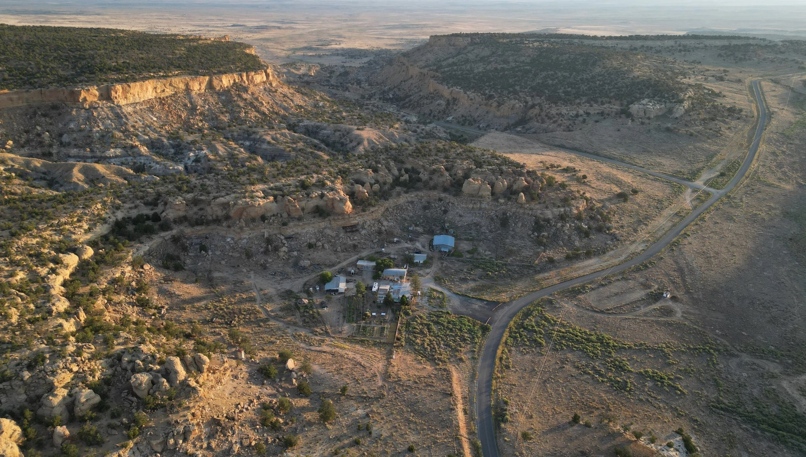

Portfolio / Selected projects
Land, community,
and the spaces between.
A selection of landscape architecture work exploring connection, memory, and our relationship with place.
01 — 02 / Explore below ↓
01Hozho Voices of Healing Center
Connecting with nature, community, and self
Crownpoint, New Mexico / Studio project 02
02Where the Sky Returns
Last Nuclear Bomb Memorial Competition
Lake Chagan, Kazakhstan / Competition proposal